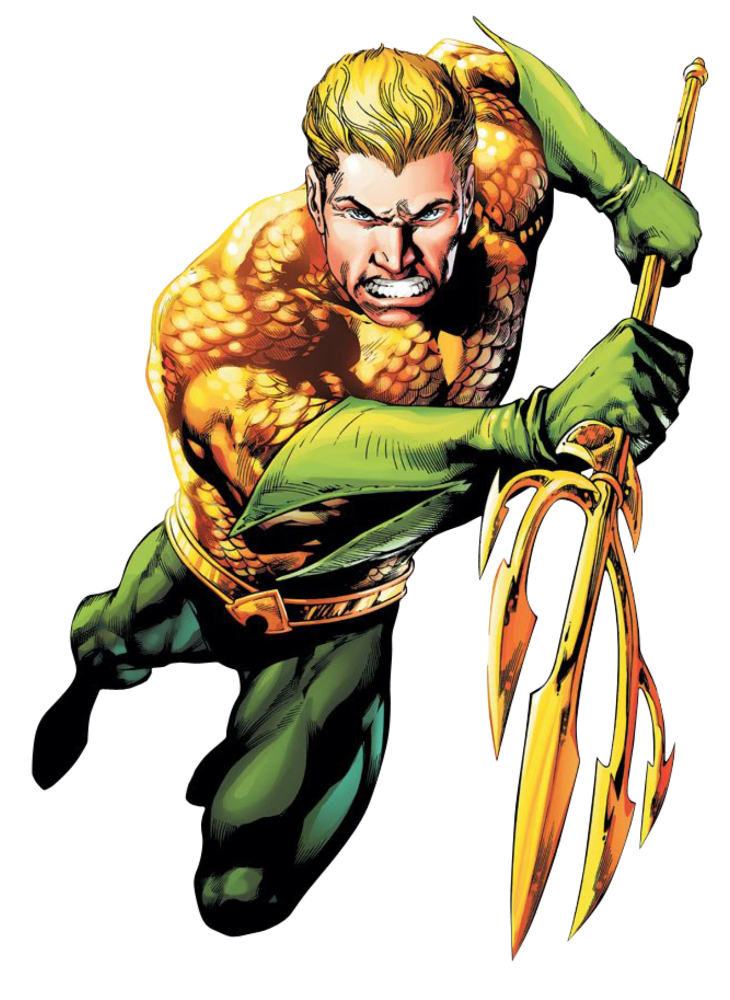

Aquaman
The son of lighthouse keeper Tom Curry and Atlanna, a water-breathing outcast from the lost underwater city of Atlantis, Aquaman is the alias of Arthur Curry. Due to his heritage, Aquaman discovered as a youth that he possessed various superhuman abilities, including the powers of surviving underwater, communication with sea life and tremendous swimming prowess. Eventually, Arthur decided to use his talents to become the defender of the Earth's oceans. His mentor is Vulko and his powerful wife is Mera. His villains include his archenemy Black Manta and his own half-brother Ocean Master.